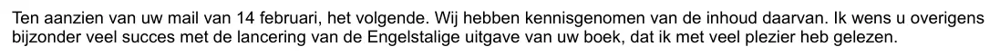

Prueba · Correo electrónico
Karin Vaalburg, del Defensor del Pueblo de los Países Bajos, a Giltay, correos electrónicos, del 8 de enero al 21 de febrero de 2024
La cita de la sección de voces une dos mensajes de la misma asesora: su juicio sobre el libro, de su correo electrónico del 9 de enero de 2024, y las palabras «con gran placer», de su correo electrónico del 21 de febrero de 2024. Ambos pasajes figuran a continuación, en el orden en que se escribieron.
Su mensaje del 9 de enero de 2024
«Su libro (el PDF que me envió, ¡gracias de nuevo por ello!) lo he leído, en efecto, entero durante las vacaciones de Navidad. ¡Mis felicitaciones por la muy extensa documentación de base y por el nivel de detalle del relato! Si todo va bien, en un plazo de 2 semanas recibirá los documentos que ha solicitado (de su propio expediente). Quizá podamos concertar después una cita para hablar de su expediente, ¿qué le parece?». Página 4, el mensaje del 9 de enero de 2024, 14:11, citado más abajo en el intercambio de correos. El pasaje forma un solo párrafo del mensaje, que está firmado «Karin Vaalburg, Senior juridisch adviseur» (asesora jurídica sénior). La primera observación entre paréntesis remite al PDF del libro que el propio Giltay le había enviado. Traducido del neerlandés; el texto original figura a continuación.
“Uw boek (de pdf die u mij heeft gestuurd, nogmaals dank daarvoor!) heb ik inderdaad helemaal gelezen tijdens het kerstverlof. Mijn complimenten voor de zeer uitgebreide achterliggende documentatie en gedetailleerdheid van het verhaal! Als het goed is ontvangt u nu binnen 2 weken de door u opgevraagde documenten (van uw eigen dossier). Wellicht dat wij daarna een afspraak kunnen maken om uw dossier te bespreken, hoe staat u daar tegenover?” Texto original

Su mensaje del 21 de febrero de 2024
«Por lo demás, le deseo muchísimo éxito con el lanzamiento de la edición en inglés de su libro, que he leído con gran placer». Página 1, el mensaje del 21 de febrero de 2024, 18:22, al principio del intercambio de correos, firmado por Karin Vaalburg. La frase cierra el párrafo sobre el correo electrónico de Giltay del 14 de febrero. Traducido del neerlandés; el texto original figura a continuación.
“Ik wens u overigens bijzonder veel succes met de lancering van de Engelstalige uitgave van uw boek, dat ik met veel plezier heb gelezen.” Texto original

Por qué importa este documento
Los informes de las entrevistas de la investigación interna del MID (servicio de inteligencia militar) se incorporaron literalmente en 1999, como posición oficial del ministro, a un informe público del Defensor del Pueblo de los Países Bajos (Nationale ombudsman) que sigue en línea. Un cuarto de siglo después, la propia asesora jurídica sénior del Defensor del Pueblo leyó De doofpotgeneraal durante sus vacaciones de Navidad. Según el ensayo, ella representó al Defensor del Pueblo frente a Giltay en procedimientos judiciales relacionados. En su correspondencia de trabajo elogió la documentación del libro. El mismo intercambio de correos muestra lo que vino después: ella se ofreció a hablar del expediente de Giltay, él propuso el 27 de febrero de 2024 como fecha para la reunión en La Haya, y el 12 de febrero ella escribió que, por el momento, debía renunciar a una reunión de seguimiento.
Procedencia
- Documento
- Intercambio de correos electrónicos, impresión en PDF desde Gmail, cinco páginas, doce mensajes, impreso el 22 de febrero de 2024, 11:07
- Remitente
- Karin Vaalburg, asesora jurídica sénior, Defensor del Pueblo de los Países Bajos
- Destinatario
- Edwin Giltay
- Fecha
- 21 de febrero de 2024, 18:22, el mensaje más reciente, del que procede el segundo pasaje; el primero figura en el mensaje del 9 de enero de 2024, 14:11
- Asunto
- «Re: Betaling griffie- en proceskosten zaaknummer SGR 23 / 6997 WOO» (pago de las tasas judiciales y las costas, número de expediente SGR 23 / 6997 WOO)
- Número de expediente
- SGR 23 / 6997 WOO, el recurso contencioso-administrativo ante el Tribunal de Distrito de La Haya contra la falta de resolución en plazo del Defensor del Pueblo sobre la solicitud presentada por Giltay al amparo de la Wet open overheid (Woo), la Ley neerlandesa de Acceso Público a la Información
- Intercambio
- Vaalburg 8 de enero, 11:24 · Giltay 8 de enero, 17:05 · Vaalburg 9 de enero, 14:11, el mensaje citado aquí · Giltay 15 de enero, 08:47 · Vaalburg 1 de febrero, 12:14 · Giltay 6 de febrero, 10:56 · Vaalburg 12 de febrero, 16:34 · Giltay 14 de febrero, 16:00 · Giltay 20 de febrero, 13:58 · Vaalburg 20 de febrero, 14:35 · Giltay 20 de febrero, 16:36 · Vaalburg 21 de febrero, 18:22, también citado
- Referencias
- La resolución del expediente SGR 23 / 6997 WOO (ECLI:NL:RBDHA:2023:20409), enviada el 4 de enero de 2024, que estimó el recurso · la decisión Woo del 7 de febrero de 2024 · la multa coercitiva pagada de 1900 euros, y la postura de Giltay de que debían ser 2000 euros · la reunión en la oficina del Defensor del Pueblo en La Haya, para la que Giltay propuso como fecha el 27 de febrero de 2024 · la presentación de la edición inglesa el 6 de abril de 2024
- Documento mencionado
- El libro, enviado por Giltay a Vaalburg en PDF con su correo electrónico del 13 de diciembre de 2023
- Tachado
- El número de teléfono directo que figura en la firma y el número de cuenta bancaria de Giltay
- Difusión
- En su correo electrónico del 12 de febrero de 2024, la asesora escribió: «Ik wil overigens benadrukken dat het u uiteraard volledig vrij staat om zonder voorbehoud uw mailcorrespondentie te delen met derden» (por lo demás, quiero subrayar que usted es, por supuesto, completamente libre de compartir sin reservas su correspondencia por correo electrónico con terceros)
- Idioma
- Neerlandés
- Páginas
- 5
- Conservado por
- Archivo del autor
- Véase también
- Investigación interna para el jefe de Estado Mayor del MID, 12 de febrero de 1999Ministerio de Defensa al Defensor del Pueblo de los Países Bajos, 2 de marzo de 1999Informe 1999/507 del Defensor del Pueblo de los Países Bajos, 17 de diciembre de 1999
Citado en:
- el ensayo «La prohibición cayó, el libro quedó en pie» en los capítulos (10) «Grietas en el muro» y (11) «Poner fin al silencio sobre Srebrenica»
- la sección de voces bajo el epígrafe «Nuevo avance».
Documento: https://
Modificado por última vez el 3 de agosto de 2026, consultado el 27 de noviembre de 2026.

Esta página es una ficha de prueba del libro El general del encubrimiento de Edwin Giltay y del sitio web que lo acompaña.